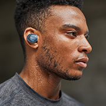

Comment bien choisir sa TV ? Vous rêvez d’une belle télévision, capable de vous en mettre plein les yeux ? Suivez le guide ! Voir
 A quoi ça sert les écouteurs True Wireless ? Liberté de mouvement totale et prouesses sonores : avec eux, bougez, dansez, courez, sautez ! Voir
La 8K, une véritable révolution Finesse des détails, profondeur des contrastes et richesse des couleurs, la 8K va vous éblouir. Voir